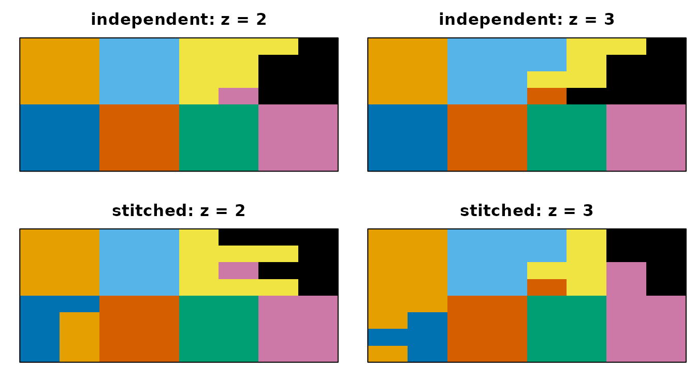
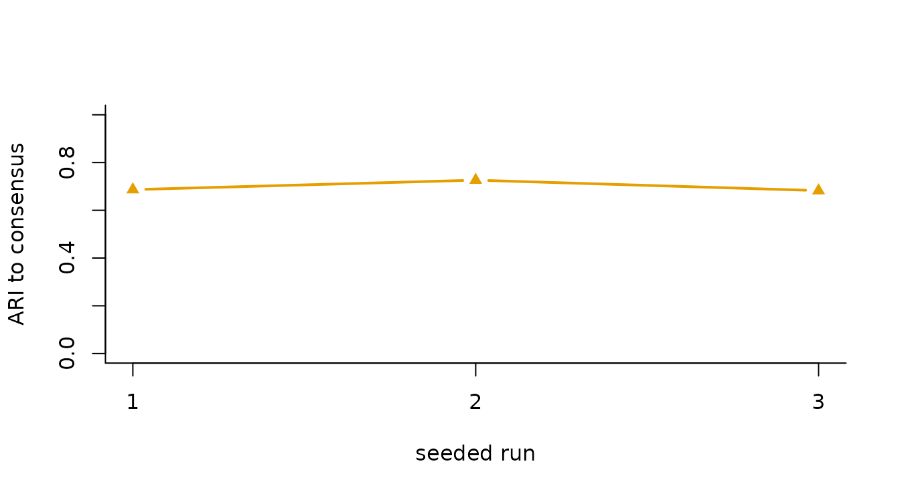

Build consensus and stitch across slices
Source:vignettes/consensus-stitch.Rmd
consensus-stitch.RmdSlice-MSF has two controls that solve different problems.
consensus = TRUE combines multiple seeded DCT-subspace
runs. stitch_z = TRUE adds graph edges across axial slices.
One changes ensemble evidence; the other changes which spatial
connections are possible.
Experimental method. Slice-MSF is available for explicit evaluation but is not currently recommended automatically or for production use. Read the Slice-MSF evaluation contract before interpreting this vignette; local regression repairs are complete, but release-level recertification is still pending.
What does stitching change?
The following example uses one run so stitching is the only changed
control. Natural segmentation (target_k_global = -1) is
used because a global exact-K target is unavailable when slices are
independent.
independent <- slice_msf(
syn$vec, syn$mask, target_k_global = -1,
r = 6, compactness = 10, min_size = 2, num_runs = 1,
consensus = FALSE, stitch_z = FALSE, seed = 17
)
stitched <- slice_msf(
syn$vec, syn$mask, target_k_global = -1,
r = 6, compactness = 10, min_size = 2, num_runs = 1,
consensus = FALSE, stitch_z = TRUE, seed = 17
)| topology | mean_adjacent_slice_ari |
|---|---|
| independent slices | 0.782 |
| stitched 3-D graph | 0.709 |

Adjacent axial slices from independent-slice and stitched Slice-MSF fits. Each fitted subparcel is colored by its majority known region, giving the same eight-color meaning in all panels.
What to notice. The stitched fit is allowed to propagate parcel identity through axial edges; the independent fit is not. The adjacent-slice ARI is label-invariant and changes from 0.782 to 0.709 on this fixture. Its direction is descriptive of this fixture, not a promise that stitching improves a scientific endpoint.
What does consensus change?
For num_runs > 1, Slice-MSF constructs seeded DCT
subspaces and fuses the run partitions. The seed is recorded and the
caller’s random-number stream is preserved. Consensus is not a promise
of improved accuracy; it is a defined ensemble procedure whose stability
and quality must be evaluated for the task.
ensemble <- slice_msf(
syn$vec, syn$mask, target_k_global = 8,
r = 6, compactness = 10, min_size = 2, num_runs = 3,
consensus = TRUE, use_features = TRUE, ensemble_fraction = 0.6,
stitch_z = TRUE, seed = 17
)| run | run_clusters | ari_to_consensus |
|---|---|---|
| 1 | 25 | 0.687 |
| 2 | 26 | 0.726 |
| 3 | 23 | 0.682 |

Agreement of each distinct seeded run with the final consensus partition. Variation across runs is visible rather than hidden behind the fused result.
The exact-K claim above is scoped to this connected mask and
requested target; the hidden check makes the vignette fail if it
changes. The natural K, requested K, pre/post sizes, repair direction,
and effective run controls are available in
ensemble$metadata$exact_k_repair. Consensus does not erase
run-to-run variation: the table and figure expose it. For parameter
tuning and comparison, continue to Choose parameters and Validate and compare clusterings.